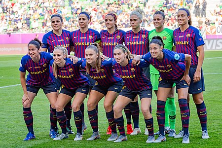

Un hito en la historia del fútbol femenino español
El FC Barcelona estrenó su sección femenina en 1988, pero la historia del fútbol practicado por mujeres en Cataluña se remonta a principios del siglo XX. El club azulgrana tardó décadas en sumarse a esta modalidad, a pesar del arraigo del balompié femenino en la región. Tras la fundación de la sección en 1988, el equipo barcelonista fue ganando presencia en el fútbol femenino español de forma paulatina. En la temporada 2001-2002 logró su primer título de liga y comenzó una etapa de dominio en el campeonato nacional. Desde entonces, ha conquistado 15 de las últimas 16 ligas disputadas. Sin embargo, su mayor éxito fue alzar la Champions League femenina en la campaña 2020-2021. Tras vencer por 4-0 al Chelsea inglés, el Barça se convirtió en el primer equipo español en hacerse con el trofeo europeo. Este hito supuso el reconocimiento internacional del proyecto azulgrana y su consolidación entre los mejores clubes del continente. Conquistar Europa ha catapultado al FC Barcelona femenino a lo más alto del fútbol mundial. El equipo dirigido por Lluís Cortés se ha situado como un modelo a seguir para otros clubes y ha revolucionado el deporte practicado por mujeres en nuestro país.